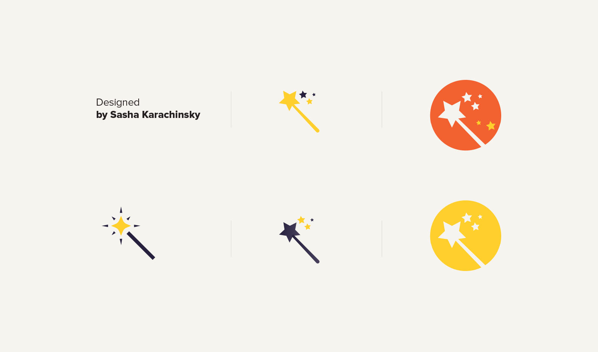
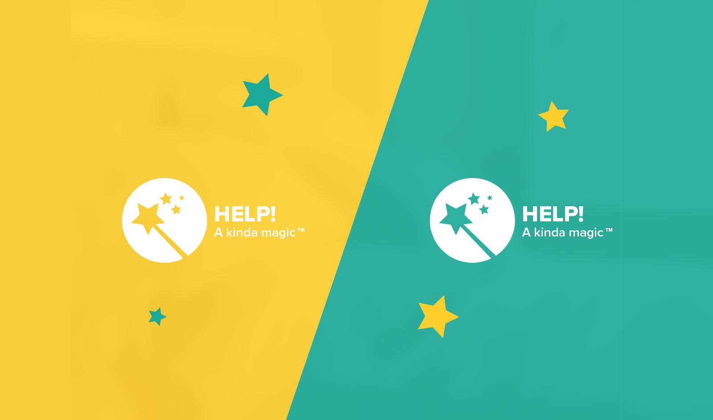
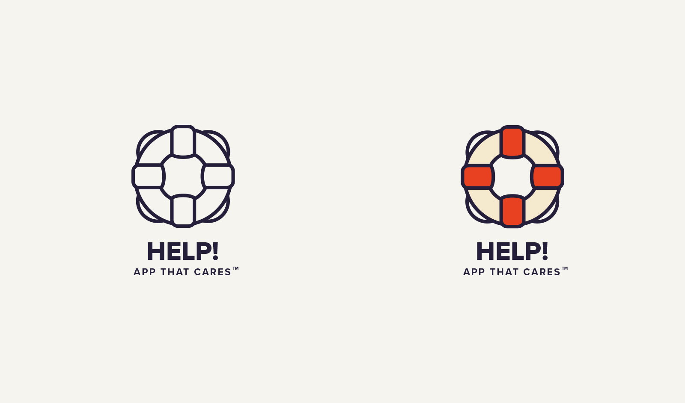
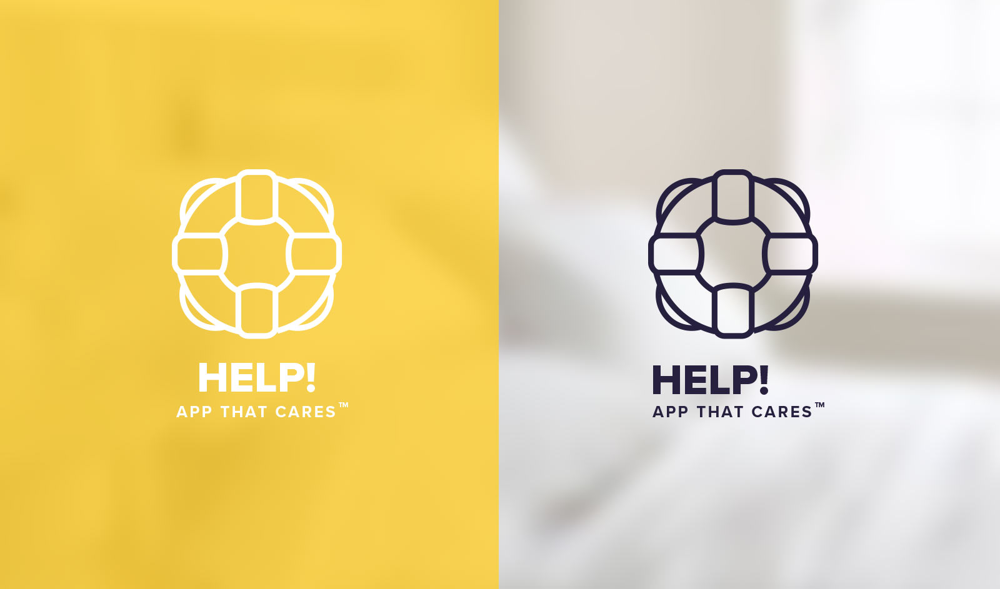
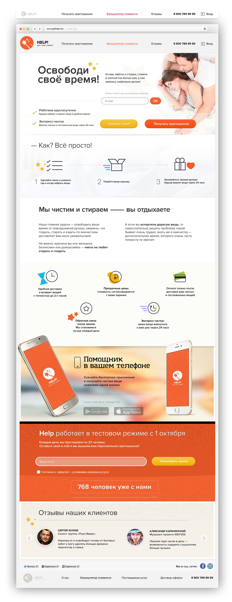

В начале апреля 2015 года Дмитрий и Екатерина — создатели бренда BeFit объявили на своей странице в Фейсбуке о поиске агентства для проведения ребрендинга. Я попал туда совершенно случайно — по рекомендации нашего общего знакомого из Сколково. Попал и тут же влюбился — потрясающая задача, заказчик — Дима и Катя по-настоящему любящие своё дело — идеальные условия для старта.
Результатом стал новый бренд «ОЖ» и полсотни динамических логотипов, но обо всём по порядку.
Основной знак

Обязательный набор ярких образов, отражающих суть

Под каждое из направлений — по нескольку вариантов

Кроме направлений «Территории ОЖ» были придуманы образы для марафонов, курсов и спринтов

Кроме направлений «Территории ОЖ» были придуманы образы для марафонов, курсов и спринтов
